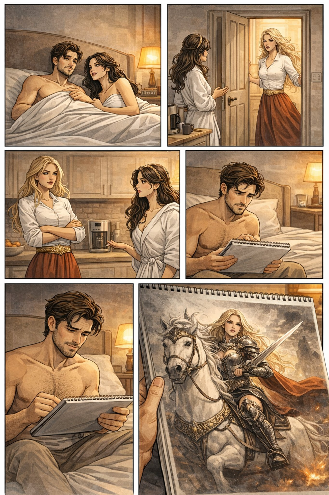

Поглавље 18: Софијина тајна
Página individual del capítulo con lectura y ejercicios.


Луис и Наташа одлазе на друго место са мапе – Скадарлију. Када стижу, примећују нешто неочекивано. Софија излази из једне зграде, изгледајући узнемирено и журно.
"Софија? Шта она ради овде?" шапуће Наташа.
Луис je гледа пуним сумње. "Морамо да је пратимо. Нешто није у реду."
Они пажљиво прате Софију, кријући се иза углова и зидова. Софија се убрзо састаје са мушкарцем који изгледа као Американац. Луис препознаје Џона, мушкарца ког је видео у Кули Небојша.
"То je Џон," шапуће Луис. "Изгледа да Софија ради за Американце."
Наташа je шокирана. "Шта? Зашто би она радила за њих?"
Луис слегне раменима. "Не знам. Али изгледа да има више страна које желе да искористе Час дивљака."
Наташа je узнемирена. "Морамо да схватимо зашто Софија оставља камења на местима где их ми проналазимо."
Луис кима. "Можда их користи као мамац. Или можда покушава да нас наведе на нешто."
Наташа уздахне. "Ово je све компликованије него што смо мислили."
Одлучују да се врате у стан да би размислили о следећем кораку. Када стигну, напетост и неизвесност прелазе у страст. Наташа прилази Луису и љуби га пуним уста. Њихова љубав je интензивна, пуним осећаја и жеље.